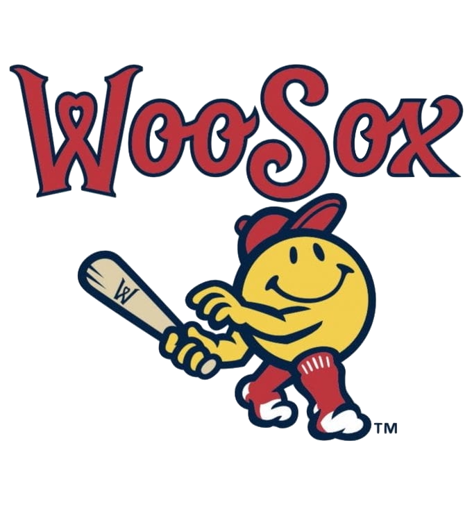

Developed a user interface capable of crafting machine learning generated firewall rules in addition to data manipulation.
Tools used: Python, JupyterLab, Docker
Developed family of board games in Java, using Test Driven Development (TDD) for term project of Object-Oriented Analysis & Design.
Analyzed cohesion, coupling, and complexity for increased software quality
Tools used: Eclipse, Java, CodeMR

Assisted Worcester Red Sox Front Office Team (Executive President, Vice President) to understand
local and nonlocal residents’ needs from a sporting mobile application to suggest application features.
Developed a small standalone application in Java
that allows a user to play a tile puzzle game
with a twist.
Tools used: Eclipse, Java, EclEmma
Used hierarchical modeling for 3D meshes with texture
and shading, in addition to lighting. Familiarized myself with transformations and
hierarchical modeling in WebGL using matrix stacks.
Tools used: Webstorm, JavaScript, CSS
Constructed a database replicating that of a museum through a three
stage project in collaboration with another individual. In addition
to database creation and relational schema planning were
several queries through SQLDeveloper and IntelliJ IDEA including triggers,
views, and much more.
Tools used: SQLDeveloper, Oracle Live SQL, IntelliJ IDEA
Used classes, methods, interfaces, abstract classes, and lists
to capture several robot matches, contestants, and scores as described
on a project description.
Tools used: Eclipse
Created a voting machine that holds the votes per voter
and determines the winner of an election.